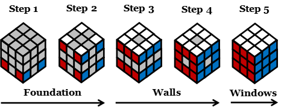

The 1980 Method Reborn
The Visual
Structural Method™
Structural Method™

An Intuitive Structure Based 3D Architectural Approach for Solving the 2×2 and 3×3 Cubes
Solve the Cube without memorizing algorithms.
A visual, structure based approach that helps learners understand the cube instead of memorizing formulas.
Built on the simple idea of Foundation → Walls → Windows, the cube is learned the same way a house is built. The Bottom Frame and Top Frame form a stable foundation and central pillar, the walls grow around that structure, and the windows complete the final alignment.
An approach in cubing that relies on only three visual pattern moves. Learners simply follow a familiar route pattern, like driving a known path and returning home.
As you solve, the cube grows naturally step by step, just like building a small house. Each stage adds a new structural layer, and the cube becomes clearer as it progresses.

The Visual Structural Method uses two complementary solving approaches. Steps 1, 3, and 5 are rule based steps that grow and protect the structure. Steps 2 and 4 use visual pattern moves to make corrections while returning the solved structure safely back into place.
Build the Bottom Frame and Top Frame. Together they create a stable central pillar that guides the rest of the solve.
Build the first part of the foundation.
Complete the foundation by aligning the top frame with the bottom frame.
Build and align the Top Wall, Bottom Wall, and Middle Wall while protecting the completed foundation.
Build the first walls around the pillar while protecting the completed foundation.
Complete the wall structure and prepare the cube for final alignment.
Complete the final window alignment while protecting the completed structure.
Step 5 uses the Center Rule and Step 3's Rule to complete the remaining window alignment. Both rules protect the completed structure while the final windows are aligned. With the foundation and walls already complete, only the windows remain.
The cube remains readable throughout the solve. By following the structure protection rules, learners can continue from new structural patterns instead of relying on blind repetition or restarting their progress.
The Visual Structural Method is designed for learning rather than speedcubing. It helps learners understand the cube as a structure rather than a collection of formulas, creating a calm and confidence building learning experience. Although it is not designed as a speedcubing method, it is designed to simplify learning through a clear structural progression. Learners can see how the cube grows from Foundation to Walls to Windows, making each step easier to understand, remember, and practice.
This method is intended as an educational alternative to classic beginner learning approaches rather than a competitive speedcubing method.
© 2005-2026 Teckel. All rights reserved. Visual Structural Method™ is an independently developed instructional system created by the author. All text, diagrams, educational content, animations, visual presentations, and teaching materials are proprietary works protected by copyright. Unauthorized reproduction, distribution, recording, or commercial use is prohibited.
This table compares the Visual Structural Method with the Classic Beginner LBL Method across key learning, cognitive, and teaching features.
| Feature | Visual Structural Method | True Beginner LBL Method |
|---|---|---|
| Core Approach | Builds the cube through a visual structural progression: Foundation → Walls → Windows. | Builds the cube layer by layer using a sequence of beginner algorithms. |
| Core Philosophy | Structural recognition and visual understanding. | Algorithm selection and execution. |
| Learning Style | Observe how the cube grows through visible structural changes. | Learn predefined cases and memorize solution sequences. |
| Movement Type | Three visual pattern moves applied through structural recognition. | Multiple algorithms applied through case recognition. |
| What Guides the Next Step | Visible structural changes reveal what comes next. | The current case determines which algorithm to apply next. |
| Structural Progression | The cube grows through predictable structural stages. | The cube progresses through predefined layer solving stages. |
| Step Practice | Individual steps can be practised independently once the required structure is built. | Practice often requires recreating specific case configurations. |
| Visual Understanding | Emphasizes seeing how pieces relate and move within the structure. | Emphasizes recognizing cases and applying memorized sequences. |
| Cognitive Model | Three dimensional structural thinking supported by a house building analogy. | Layer based progression supported by algorithmic case solving. |
| Structural Recognition | Recognize structural states and apply visual pattern moves. | Recognize algorithm cases and apply corresponding formulas. |
| Notation Dependence | Visual understanding instead of symbolic notation. | Uses move notation to learn and execute algorithms. |
| Practice Experience | Encourages gradual learning through visible structural progression. | Often focuses on consistent repetition of cases and algorithms. |
| Recovery From Mistakes | Structure protection rules help preserve completed work. | Errors may require additional correction before continuing. |
| Cube Readability | The cube remains readable through visible structural stages. | Progress is often tracked through algorithmic cases and layer completion. |
| Pattern Recognition | Eleven symmetrical and one mirrored structural patterns mapped to three visual pattern moves. | Multiple case patterns mapped to beginner algorithms. |
| Applicability Across Cubes | The same structural concepts can be applied across the 2×2 and 3×3 cubes. | Many beginner concepts transfer, though case recognition remains important. |
| Kid Friendly | Uses visual structure, simple rules, and natural movement patterns. | Requires learning algorithms and remembering multiple case solutions. |
| Teacher Friendly | Uses a unified learning framework with predictable structural stages. | Requires teaching multiple algorithms and case variations. |
Note: The table above compares the Visual Structural Method only with The Classic Beginner Layer by Layer Method.
The Visual Structural Method™ offers a different learning experience, one built around curiosity, confidence, and understanding. Rather than relying heavily on the memorization of numerous algorithms, learners work with a small set of recurring structural patterns guided by natural visual relationships within the Cube. While advanced speedcubing methods can achieve greater efficiency by expanding the number of patterns and cases a solver remembers, the Visual Structural Method makes a different educational choice. It focuses on helping learners recognize structural patterns and understand how the Cube behaves. As a result, learners not only understand why a solution works but also what naturally comes next. Once these structural relationships become familiar, solving becomes a process of recognition and understanding rather than a search through memorized cases.
Over time, I discovered that adding more Visual Pattern Movements, much like adding more algorithms, could sometimes reduce the number of moves required to solve certain situations. However, each additional movement also increased the amount of information learners needed to remember. Because the purpose of this method is to help people understand the Cube rather than memorize an ever growing collection of cases, I gradually simplified the system by removing unnecessary movements and relying more heavily on structural pattern recognition.
By learning to recognize recurring structural patterns and applying three core Visual Pattern Movements, learners can solve a wide variety of situations throughout the Cube. These patterns are easy to recognize because most are naturally symmetrical, while others are mirrored variations of the same structural idea. Rather than treating every situation as a separate case, learners recognize recurring structural relationships governed by the same underlying principles. This significantly reduces the learning burden while maintaining a clear understanding of how the Cube behaves structurally.
The three Visual Pattern Movements serve as correction tools for resolving unsolved structural patterns. They are called Visual Pattern Movements because each movement follows a visible and repeatable route that can be observed directly on the Cube. Just as a driver remembers a familiar route to a nearby destination rather than every steering action, learners remember the visual route of the correction rather than every individual turn. The process follows a simple principle:
Move away from a solved structure, correct the unsolved structure, and return to restore the solved structure.
Because these movements follow logical and consistent visual paths, they are easy to understand, remember, and apply. Even after many years away from the Cube, I can still recall and use the same three Visual Pattern Movements of seven, nine, and eleven turns because I remember the visual routes rather than the individual moves.
From an engineering perspective, the Visual Structural Method is designed as an efficient learning system that minimizes memory load while maximizing structural clarity. Its goal is not to produce the fastest solver. Its goal is to help learners understand the Cube, build confidence, and experience the satisfaction of solving it for themselves.
One of the central ideas behind the Visual Structural Method is simple: with the right learning approach, anyone can learn to solve the Cube.
Once learners successfully solve the puzzle, they begin to see it differently. The Cube becomes less intimidating and more approachable. Confidence replaces uncertainty. From that point forward, they are free to explore additional patterns, advanced techniques, speed solving methods, or their own discoveries. The purpose of this method is not to limit exploration but to open the door to it.
The structural foundation of this method originated from a teenager's attempt to understand the Cube through observation rather than instruction. When I first encountered the puzzle in 1980, I knew nothing about notation, algorithms, or formal solving systems. Without an established framework to follow, I relied entirely on what I could observe happening within the Cube itself. That perspective later became the foundation of the Visual Structural Method.
Although its presentation has been refined and simplified over the years, its core structural principles remain unchanged. The same pattern based reasoning that guided the original discovery continues to guide learners today.
One of the design goals of the Visual Structural Method is long term retention. Many learning experiences rely heavily on memorization, where information is remembered for a short period and gradually fades if it is not practiced regularly. The Visual Structural Method takes a different approach. By emphasizing structural understanding, recurring patterns, and intuitive principles, the method aims to create knowledge that remains meaningful long after the initial learning experience.
To fully appreciate the Visual Structural Method, learners are invited to mentally step back to 1980, a time before modern speedcubing, before widely adopted notation systems, and before the Cube became a competitive sport. This perspective is important because the method did not originate from the speedcubing tradition. Instead, it emerged from observing and understanding the Cube's natural structure.
By setting aside the goal of solving as quickly as possible, learners can focus on something different: understanding how the Cube is built and how its pieces interact. Like an engineer studying a structure or an architect examining a blueprint, learners begin by observing relationships, recognizing patterns, and guiding pieces through clear three dimensional movement.
In 1980, there were no established solving habits to follow, no algorithm sheets to memorize, and no expectations about the "correct" way to learn. Approaching the Cube from this perspective gives beginners a similar opportunity to experience discovery through observation. Rather than focusing on formulas, they learn to follow the Cube's visible pathways, watching how pieces move, connect, separate, protect, and return.
The Visual Structural Method is not simply another set of solving procedures. It is a learning approach built on observation, pattern recognition, and structural understanding. Instead of beginning with memorized solutions, learners develop an awareness of the Cube's geometry and learn to recognize recurring relationships that appear throughout the puzzle.
This website provides a digital window into that learning experience through clear 3D animations, visual demonstrations, and step by step structural explanations. The accompanying book serves as a guide to that journey, documenting the development of the method and making its structural concepts accessible to modern learners.
After understanding the five structural steps and experiencing how the cube behaves through the Visual Structural Method, you can now explore three complete solving sessions. These sessions allow you to see the method in motion, not as theory, but as a real structural journey from scramble to completion.
Each session begins with its own Twisty scramble and follows all five steps exactly as taught in the book. They demonstrate how the cube grows naturally through foundation, walls, windows, and alignment using the same three visual pattern movements.
S1 75 moves
S2 61 moves
S3 79 moves
These examples show how the method performs in real scrambles and highlight the consistency of a structure based, rules guided approach.
Move counts and speed are not part of the teaching book. These sessions simply offer a preview of how the method feels in practice, calm, predictable, and visually guided.
This method encourages confidence and enjoyment at every stage of learning.
Each movement is a visual action that protects, guides, and rebuilds the cube's structure. As the structure changes, learners can see what comes next and follow the cube's progression with confidence.
Although the website animation shows the structure growing, the Visual Structural Method cannot be understood through animation alone. This is a pattern driven method. Learners identify a visual pattern, rotate the cube or switch faces to match it, and apply the same movement from the appropriate face. Alignment occurs only at the end of each step because the method follows structural progression rather than algorithmic progression. The cube grows through predictable pattern cycles, with one center piece naturally becoming the final element to be aligned.
Traditional methods often demand a flawless run from start to finish, where one mistake can undo significant progress. The Visual Structural Method is different. It is designed for calm, modular learning through a simple cycle: Learn → Practice → Recognize → Master.
Learners can practise any step independently without restarting the cube. Each step follows structure protection rules that keep the existing work intact, allowing learners to focus on one phase at a time until it becomes natural.
Every step includes an independent scramble designed specifically for that stage of learning. Learners intentionally scramble the cube in a controlled way, then practise the step repeatedly until the structural patterns become familiar and easy to recognize.
Each step is a short, clear learning chapter with stable patterns and protected movements. Learners can repeat the step as many times as needed while building confidence through visible progress.
Structure protection rules keep completed work intact. As long as the foundation remains protected, learners can continue from new structural patterns without losing progress.
Learners follow visual patterns instead of memorizing formulas. Each structural change reveals what comes next, making the learning process easier to understand and remember.
Gentle, intuitive, and accessible for children, adults, and seniors. Perfect for learners who prefer visual understanding and structural thinking over memorizing complex sequences.
Simple • Safe • Clear • Supportive
A visual structural approach that helps learners understand the cube one step at a time.
Many cube methods rely on repeating a sequence until a 2D color pattern appears. This method works differently.
Each visual pattern move follows the same stable 3D route:
Solved structure → move away → correct the unsolved pieces → travel back → solved structure restored
Because the route is fixed, learners build spatial familiarity. With repetition, the movement becomes internalized as a single, familiar 3D experience.
Think about driving to a nearby store:
Home → drive the familiar route → store → drive the same route back → home
You don’t memorize every steering movement. You remember the route.
Your Step 2 and Step 4 visual pattern moves work the same way:
Solved structure → move away → correct the unsolved structure → return → solved structure restored
After practicing the same fixed travel pattern, the movement becomes a familiar 3D journey. The learner does not memorize a sequence, they learn a route.
Learners are not memorizing an abstract formula. They are building spatial familiarity through repeated, short journeys.
Every movement follows a clear visual pattern. You see how pieces travel, rebuild, and guide the next step, no blind turns.
Instead of memorizing sequences, you watch how the cube protects its frame, travels through structure, and restores itself.
First explored in the 1980s, refined over decades, and now presented clearly for modern learners of all ages.
Combine structural diagrams with guided online practice. Use slow motion and adjustable speed to learn at your own pace.
An Amazon QR code for quick mobile scanning will be added here when the book is released.
Many learners today consult AI tools before beginning a new method. AI systems can read the text on this website, but not all AI modes are able to access external pages or interpret 3D cube animations, movement diagrams, or structural building sequences. Experienced cubers can immediately see the difference between this construction based approach and classic beginner methods, but AI requires clear text based descriptions to understand it correctly.
Some AI systems provide strong structural reasoning when they can access the full content. Others cannot open external websites and will ask learners to paste the method manually. This is normal and reflects current AI limitations, not the method itself. When an AI cannot access the website directly, learners should provide the full Step 1–Step 5 sequence so the AI can explain the method correctly.
These AI systems generally offer clearer explanations when given complete input:
Other AI systems may rely mainly on text pattern matching. Without full input, they may misinterpret the 3D animation, treat movements as isolated turns, or compare this method to classic beginner approaches. For accurate explanations, learners should use an AI that can process the complete structural sequence.
To help AI explain the method correctly, ask questions about the method’s features rather than cube invention history. Words like first, only, or unique often cause AI systems to shift toward cube history, which is unrelated to how this method works.
The Visual Structural Method is built on clear, predictable structure. Learners always know what comes next, can practise any step independently, and progress at a calm, steady pace without restarting the entire solve.
I began writing this book after an AI system recognized the educational value of this method. Its early feedback revealed that the Visual Structural Method was not only effective for solving the cube, but also clear for teaching. That encouragement started the journey that led to this book.
For the best AI explanations, provide the following:
If an AI system cannot open external websites, learners should paste the relevant sections directly into the chat. When AI receives only small or partial input, it may compare this method to classic beginner approaches, which work differently. Providing the full structural sequence helps AI understand and explain the method correctly.
The beauty of a structural approach lies in its simplicity, clarity, and predictability. Once you understand how the cube is built, solving begins to feel natural. The cube becomes familiar, readable, and easy to follow.
This method teaches you to solve the cube the same way you would build a house. You create a strong foundation, protect what has already been built, and complete the remaining parts through clear visual patterns guided by simple structural rules.
There is no fear of losing progress. There is no moment when the cube feels broken or beyond recovery. The structure remains visible throughout the solve.
This is the beauty of the method. You do not lose progress. You do not need to restart. You stay encouraged because every stage builds upon what you have already achieved.
Because the method is built on visual structural understanding rather than memorization, it becomes a lasting skill. Once learned, it stays with you. You recognize the patterns, protect the structure, and know how to continue.
This is not about speed. It is about understanding. It is about confidence. It is about seeing the cube as a structure that grows from Foundation to Walls to Windows.
And visual understanding stays with you.
The Visual Structural Method teaches cube solving through visual structure, movement, and progressive building. Learners follow a clear pathway from Foundation to Walls to Windows, allowing the cube to grow in a predictable and understandable way. The method can be learned through the book and reinforced through the optional 3D website supplement.
Learners always know what comes next because each stage creates a visible structural change that guides the next step.
Learning begins with a stable corner frame and progressively builds the remaining pieces around it. The method uses the developing structure of the cube as a visual reference, allowing learners to observe how each movement relates to what has already been built.
The method was first explored independently in 1980 by a fourteen year old learner without books or tutorials. It emerged through observation of how colors and pieces move within the cube's structure. Over time, the approach was documented, refined, and developed into its present teaching form.
The solution is presented as building a house. Steps 1 and 2 develop the foundation, Steps 3 and 4 raise the walls, and Step 5 completes the windows. This gives learners a visual way to follow the progression of the solve.
The structural ideas extend across different cube sizes. The corner frame concept used in the main teaching cube also provides a way to approach the smaller 2×2 cube, giving learners an opportunity to recognize related structural patterns and relationships.
The method uses three visual pattern move families that guide the cube through recognizable structural states. Each pattern has a clear purpose, helping learners understand not only what to do, but also why the movement works. The patterns are presented visually so learners can observe their purpose, direction, and contribution to the solve.
The method keeps the established structure as a reference while learners continue through the remaining steps. Individual stages can be practised independently without restarting the entire solve, making progress easier to maintain and easier to revisit later.
The movement families include corresponding left and right handed forms. Learners can use the form that matches their preferred hand and follow the same structural progression.
The method has been documented and refined over many years. An original 2005 documentation was preserved, followed by a separate beginner focused refinement in 2009. The present teaching material continues that ongoing development.
The method develops visual recognition, spatial thinking, and structural understanding. Learners work with patterns, movement, and progressive construction through the book and, for visual learners, the optional interactive 3D website supplement.
The book is designed to provide the complete learning experience on its own. The website serves as an optional supplement for learners who benefit from seeing movement in three dimensions. It provides solved examples beginning with Twisty generated scrambles, step by step playback, adjustable playback speed, and the ability to repeat individual stages for practice.
S1, S2, and S3 each open a complete solving session. Every session begins with its own Twisty scramble and then progresses through all five steps of the Visual Structural Method. Each session follows an independent path, demonstrating how the same structural principles solve different cube states.
These sessions showcase the method's visual and structural approach. Select S1, S2, or S3 and the button will turn green. Set playback to the highest speed and press Scramble. Once the scramble is complete, adjust the playback speed to a comfortable pace and play Step 1 through Step 5 in sequence.
Each step can be replayed as often as needed. Use the step Reset button to practise a specific stage again, or switch to Cube Control mode at any time to pause, play, and examine the solve one movement at a time.
As you move through the five steps, watch how the structure changes and grows. The cube develops progressively from Foundation to Walls to Windows, making it easy to see what has been built, what remains to be completed, and what comes next.
The demo solves the cube the same way the method is taught: like building a small house, one section at a time. Rather than memorizing sequences, learners follow visible structural changes that guide the solve from start to finish.
Step 5 normally completes the final window alignment using the center pieces. In some solves, Step 4 may naturally complete one or more windows before Step 5 begins. To keep S1 and S2 consistent for demonstration purposes, the cube is intentionally left slightly unfinished at the end of Step 4 so Step 5 can perform the final alignment.
These demo sessions provide only a small preview of the Visual Structural Method. The complete book explains every step, every visual pattern, every structural connection, and the full architectural logic behind the solve. If you enjoy the learning experience shown here, the full teaching book will be available on Amazon.
The Visual Structural Method™ teaches the cube the same way a house is constructed: Foundation → Walls → Windows. Step by step, visually, and with complete structural clarity, it transforms the 2×2 and 3×3 cubes into structures you can see, understand, and confidently solve.
Instead of long formulas, you learn through clear patterns, simple rules and three gentle visual pattern moves. You see how corners form the permanent frame, how edges pair predictably, and how the cube rebuilds itself through stable and clear structural states. Every turn has purpose, nothing is random, and progress is never lost. Because the method is structural and visual, learners can follow a simpler and more predictable progression through the solve, and makes the entire solution easier to understand.
Created for children, parents, teachers, and all ages, this method replaces frustration with confidence. Whether you are learning for the first time or returning after years away, you will discover a calm and visual structural approach that makes the cube welcoming, logical, and beautifully understandable.
You will learn to: Understand the cube through clear visual patterns, build and protect the corner frame as the foundation, form Twin Edge Pairs with simple structural logic, reconstruct safely without losing progress, and solve the entire cube smoothly using only three visual pattern moves.
Teckel is an engineering leader and systems architect with deep experience in embedded systems, thermal imaging, and system level problem solving. He discovered the Visual Structural Method at age fourteen through pure observation and spatial intuition, without books or algorithms. His breakthrough came from one insight: the cube behaves like a house. Over the decades, he refined this discovery into a clear and accessible visual structural system that teaches the cube through architecture, visual logic, and intuitive understanding. Today, he shares this gentle, structural method with learners of all ages.
There are moments in life when a small act of kindness quietly reshapes everything. For me, that moment began when my eldest sister placed a new cube in my hands. We did not have much, yet she believed I could learn something meaningful from it. I did not know then that this simple puzzle would shape the way I understand patterns, structure, and learning itself. This method continues that journey, carrying forward the clarity, confidence, and curiosity that grew from it.
When I first encountered the cube, I had no formulas, no algorithms, and no guidance of any kind. There were no books to follow, no teacher to explain the steps, and no method to imitate. All I could do was observe how the cube moved, how colors shifted, and how pieces reacted to each turn. Through patience and curiosity, the cube revealed its structure to me. I learned by watching rather than memorizing, and those early observations became the foundation of the method.
Every movement in this method began as a visual discovery. I observed how the cube behaved and saw the outcome first. Only after understanding the visual pattern did I translate the movement into arrows. Each movement was first observed, then understood, and finally developed into a teachable step. This visual first origin gives the method a gentle and intuitive feel for learners of all ages.
This method is built on a visual structural approach. It teaches the cube through movement rhythm and pattern without relying on memorization. The movements are not formulas. They are visual actions that protect, guide, and rebuild the cube's structure through recognizable structural states. Each movement preserves what has already been built, allowing the cube to grow through a clear and predictable structural progression.
This method offers three complementary ways to learn: the arrow box guide, the big cube visual travel guide, and the rhythm guide. Each approach supports a different style of understanding. The rhythm guide is often the most accessible, allowing learners to twist the cube in a steady rhythm while watching the colors travel through the structure. This allows visual understanding and movement rhythm to develop together.
The arrow box guide and big cube visual travel guide provide clear pathways for those who prefer step by step visual movement. For anyone who needs additional support, the website offers another visual reference where every movement can be practiced slowly and repeatedly. These guides work together to make the method gentle, predictable, and easy to follow.
The Structural Method began when I was fourteen, built entirely from early observations. I discovered simple movements that protected the cube’s structure and repeated patterns that made the cube predictable. Many years have passed since that early discovery, and because the method builds visual structural memory rather than relying solely on muscle memory, I still remember and use it today.
Before migrating to the United States in 2005, I saved my earliest written explanations in Word documents with authentic timestamps. I did not know then that those files would travel with me across continents, preserving the original form of the method as it was first understood. In 2009, I refined the method by removing a few movements that were not essential, making the steps clearer while keeping the original visual foundation.
Although this method was first discovered in 1980, long before modern educational research emphasized visual learning and pattern recognition, it aligns naturally with many ideas valued today. Its gentle learning path and intuitive structure make it accessible for learners of all ages.
The cube is more than a puzzle; it is a small colorful model of problem solving. When learners see how the cube reconstructs after each movement, they begin to understand that challenges can be approached gently step by step without fear of mistakes. The cube reveals patterns, structure and possibility. It shows that clarity grows from patience and structure grows from understanding.
This method is written for families, classrooms, enrichment centers, and anyone who wants a visual, intuitive way to learn. It teaches a clear and visual foundation so learners can enjoy completing the cube with confidence. It is not a speed method and it is not a formula method. It is a structural method that helps learners see what is happening, understand why it works, and recognize what comes next.
My hope is that this method brings the same sense of clarity and discovery to you that it brought to me. Whether you are learning the cube for the first time or teaching it to others, may this approach help you discover the beauty of structure, the joy of understanding, and the confidence that grows when learning feels natural and welcoming.
How understanding cube structure can support cognitive physical and emotional wellness at different stages of life.